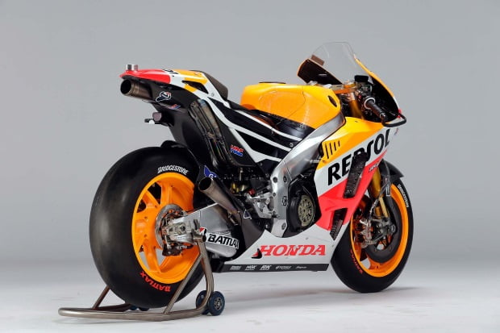

Gracias a su diseño, su motor V4 refrigerado por agua,es capaz de entregar 235 caballos de potencia, esta moto es lo más parecido a una MotoGP que Honda ofrece en el mercado.Esta motocicleta se instala en el listado de las motos más caras del mundo, y cuenta con el título de la “más cara de calle”. Desafortunadamente no cualquiera puede sentirse YonnyHernandez, Marc Marquez o Valentino Rossi, ya que cuesta 188 mil euros.
